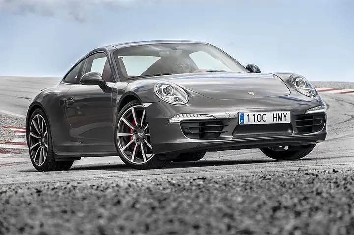
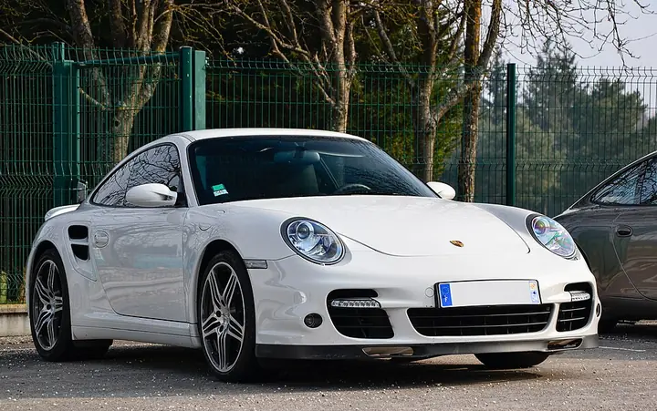
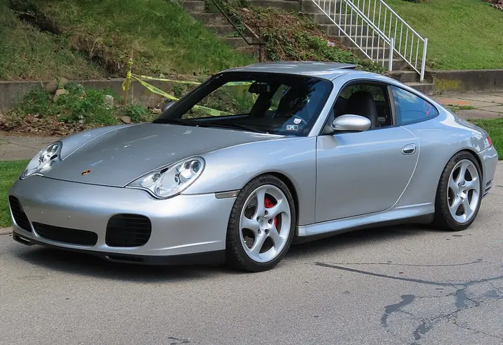
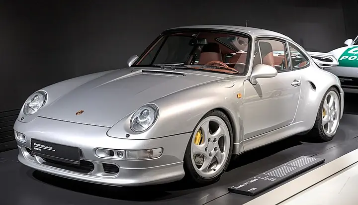
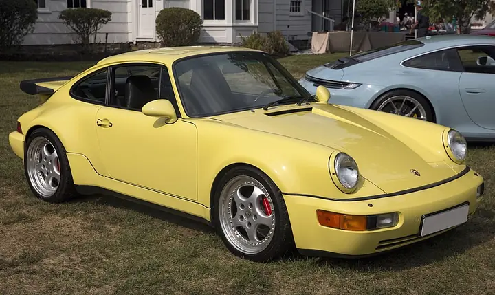
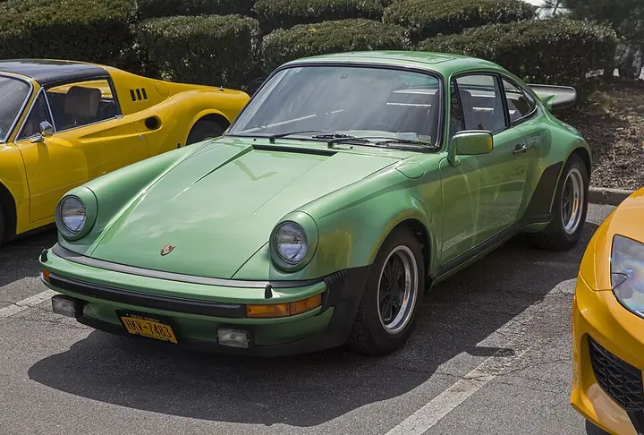
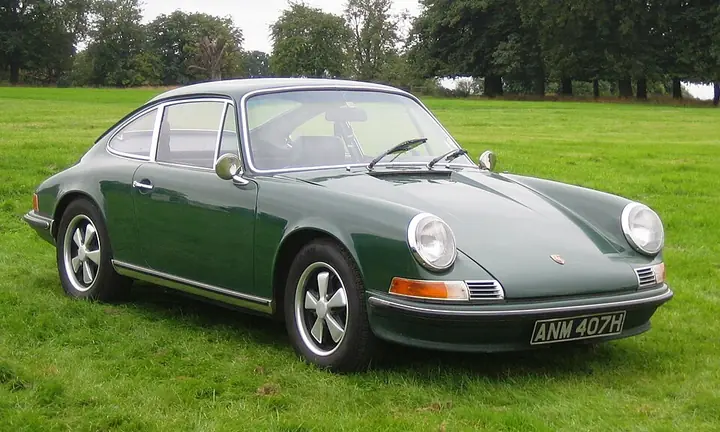

Porsche 911
992 Series (2019–present) · 2019–present
Abstract
This generation of the Porsche 911 is a sports car (S), built 2019–present in Germany: Stuttgart, Zuffenhausen. Body styles: 2-door coupé, 2-door targa top, 2-door convertible. Layout: Rear-engine, rear-wheel drive. Designed by Ben Baum under Michael Mauer. This generation has its own article: Porsche 911 (992).


Figures of the current version from the manufacturer: Porsche 911 Carrera models (porsche.com, France), 2026-11.
1Specifications
| Production | 2019–present |
|---|---|
| Assembly | Germany: Stuttgart, Zuffenhausen |
| Designer | Ben Baum under Michael Mauer |
| Class | Sports car (S) |
| Body style | 2-door coupé2-door targa top2-door convertible |
| Layout | Rear-engine, rear-wheel driveRear-engine, all-wheel drive |
| Platform | MMB (Modular mid-engine platform) |
| Engine | Petrol:Carrera 394 ch (290 kW), PDK, rear-wheel driveCarrera T 394 ch (290 kW), manualCarrera S 480 ch (353 kW), PDKCarrera 4S 480 ch (353 kW), PDK, all-wheel driveHybrid:Carrera GTS and Carrera 4 GTS 541 ch (398 kW) combined |
| Electric motor | Permanent magnet synchronous electric motor |
| Transmission | 6-speed manual7-speed manual7-speed PDK8-speed PDK |
| Battery | 1.9 kWh compact liquid-cooled Li-ion (T-Hybrid) |
| Wheelbase | 2450 mm |
| Length | 4519–4535 mm |
| Width | 1852–1900 mm |
| Height | 1289–1303 mm |
| Weight | 1380–1710 kg |
| Also called | Porsche 911Porsche Carrera |
| Predecessor | Porsche 911 (991) |
2Versions
- First Phase (992.1)
- Carrera, Carrera 4, Carrera S and Carrera 4S
- Targa 4 and Targa 4S
- Carrera GTS, Carrera 4 GTS, Targa 4 GTS
- Turbo and Turbo S
- GT3 and GT3 Touring
- GT3 RS
- Sport Classic
- 911 Dakar
- 911 S/T
- Second Phase (992.2)
- Carrera, Carrera 4, Targa 4, Carrera S, Carrera 4S and Targa 4S
- Carrera GTS T-Hybrid
- GT3, GT3 Touring and GT3 S/C
- Turbo S
3Previous generations

_(9626546987).jpg){kind=link}

.jpg){kind=link}



_in_the_Porsche-Museum_(2009)_1X7A0365.jpg){kind=link}






4Generation by generation
Length +5% from the first to the last
911, 911E, 911L, 911S, 911T 19644,290 mm
930 Turbo 19754,291 mm
964 Series 19894,275 mm
993 Series 19944,260 mm
996 19974,432 mm
997 20044,430 mm
991 Series 20114,491 mm
992 Series 20194,519 mm
Weight +14% from the first to the last
930 Turbo 19751,210 kg
993 Series 19941,390 kg
996 19971,317 kg
991 Series 20111,435 kg
992 Series 20191,380 kg